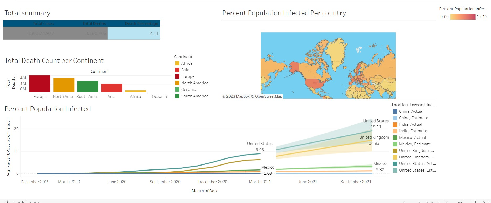
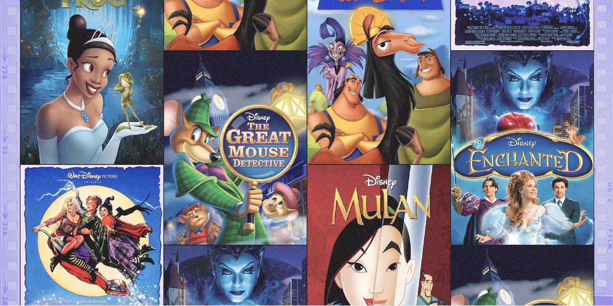

In this project I wrote an SQL code for data cleansing and preprocessing aimed at transforming the raw data in the "NashvilleHousing" table into a more structured and standardized format for analysis. It involves various transformations such as date formatting, splitting addresses, handling boolean values, removing duplicates, and cleaning up unused columns.

This project primarily focuses on exploring COVID-19 data, calculating various percentages and
statistics, and creating a view for potential visualization purposes. It demonstrates skills in SQL
operations such as joins, window functions, CTEs, and creating views.

This holds my Tableau Dashboard from Covid Data exploration

In this project, I conducted a comprehensive analysis of a movie dataset using Python and various data analysis libraries. The dataset consisted of movie-related information, including budget, gross earnings, release dates, and production companies. To ensure data quality, I performed data cleaning, handled missing values, and converted data types. Leveraging the power of Pandas, Seaborn, and Matplotlib, I visualized the correlation between movie budgets and gross earnings through scatter plots and regression lines. Furthermore, I employed correlation matrices and heatmaps to visualize relationships among numeric features. By numerizing categorical data and computing correlation coefficients, I determined that 'votes' and 'budget' exhibited the highest correlation with 'gross' earnings. This project showcased my ability to apply data analysis techniques, interpret visualizations, and draw meaningful insights from real-world datasets.

I wrote a Python script that interacts with a Star Wars API (SWAPI) to fetch and process data related to starships from the Star Wars universe. It stores this data in a MongoDB database.